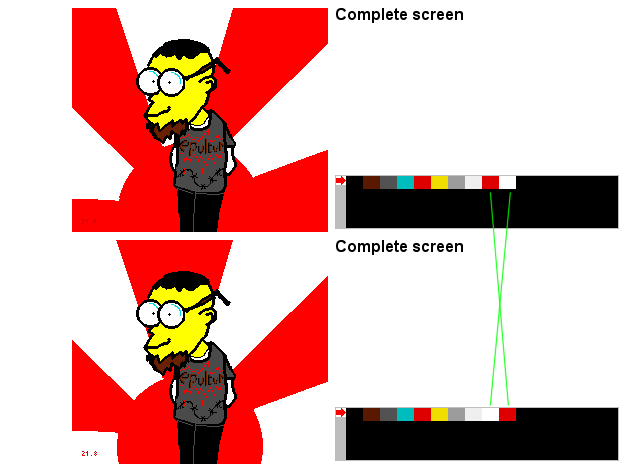

Pic a - What appen when I reload a palette?
When you reload a palette, all displayed tiles/sprites using this palette will be displayed with the new palette.
In sonic3, the water falls of the jungle&water levels are made only with color cycling.
